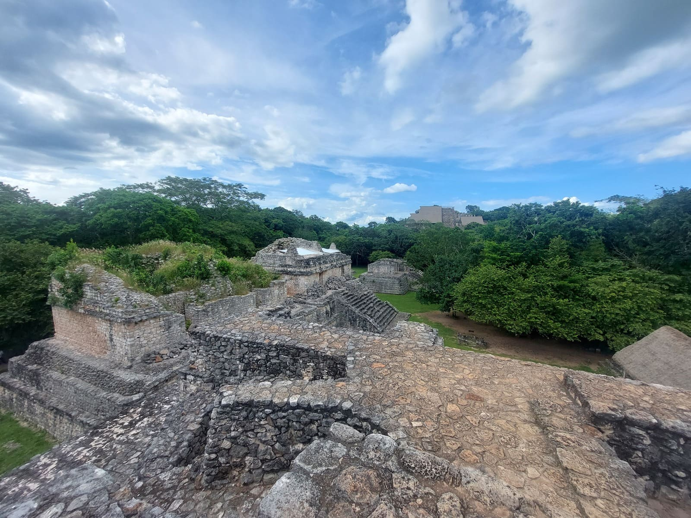
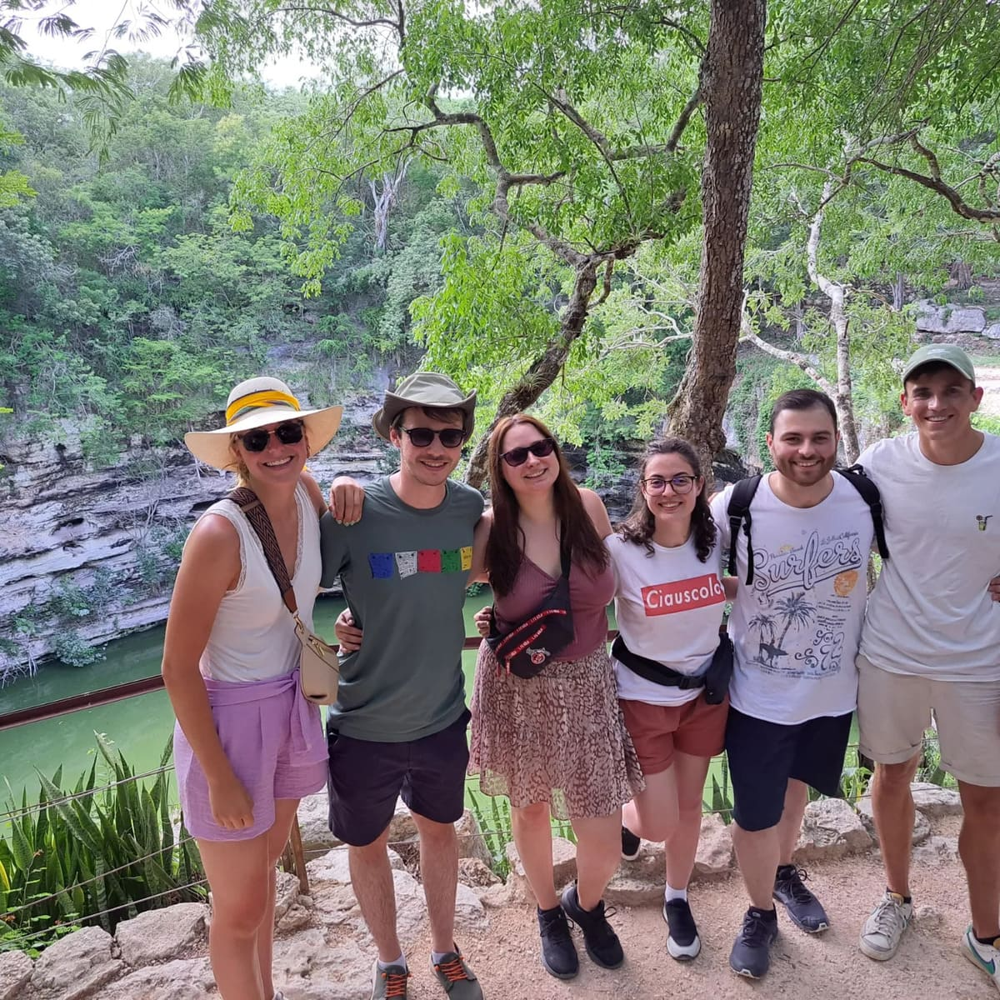
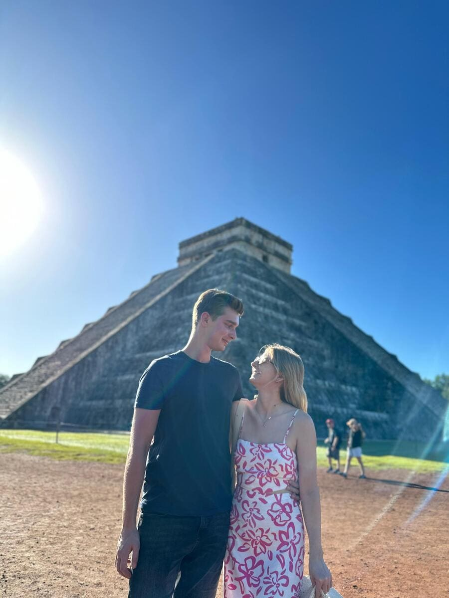
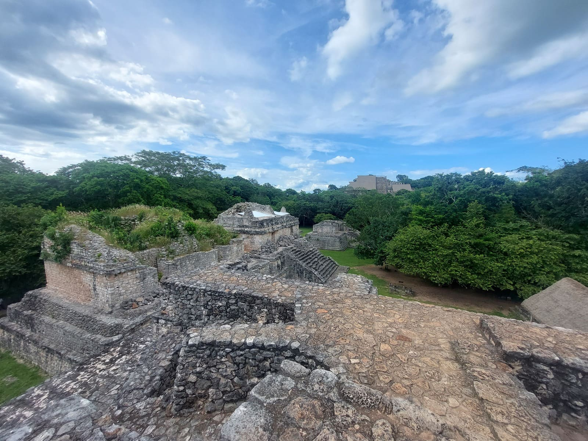
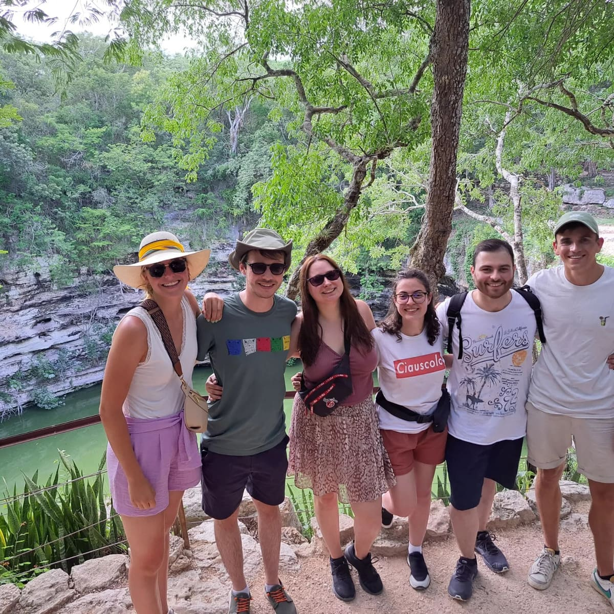
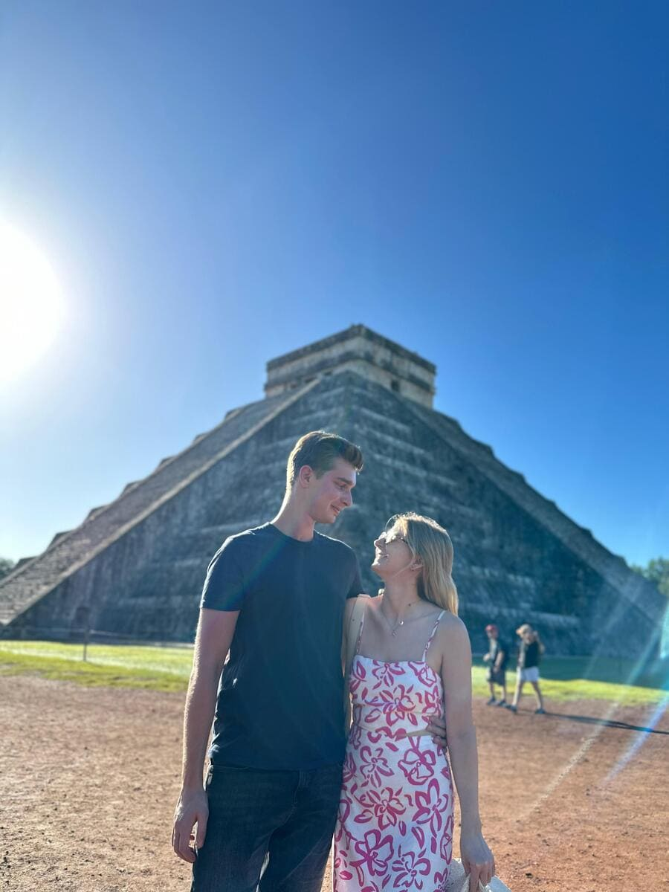
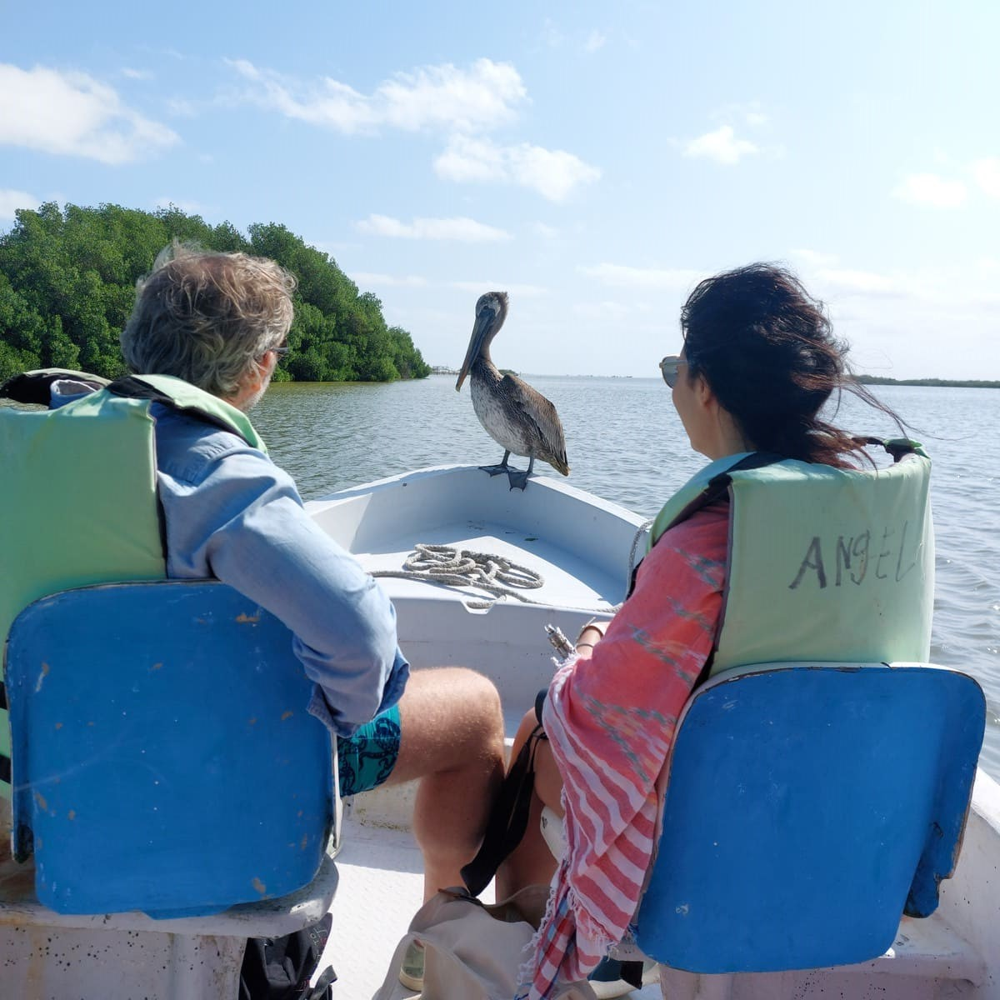
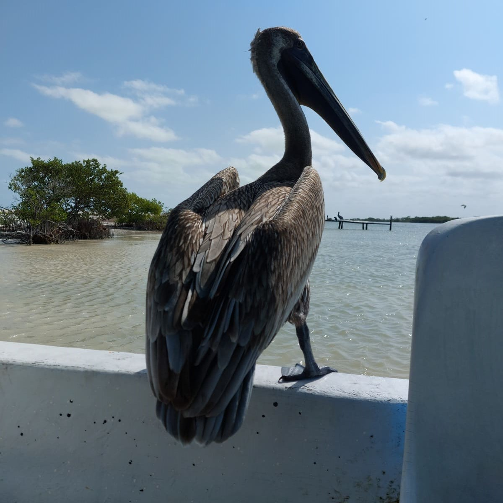
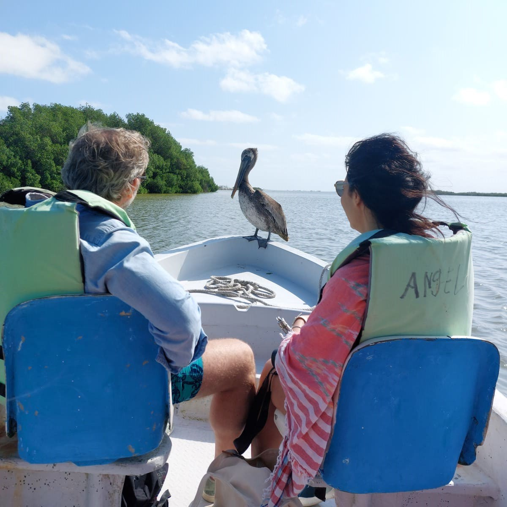
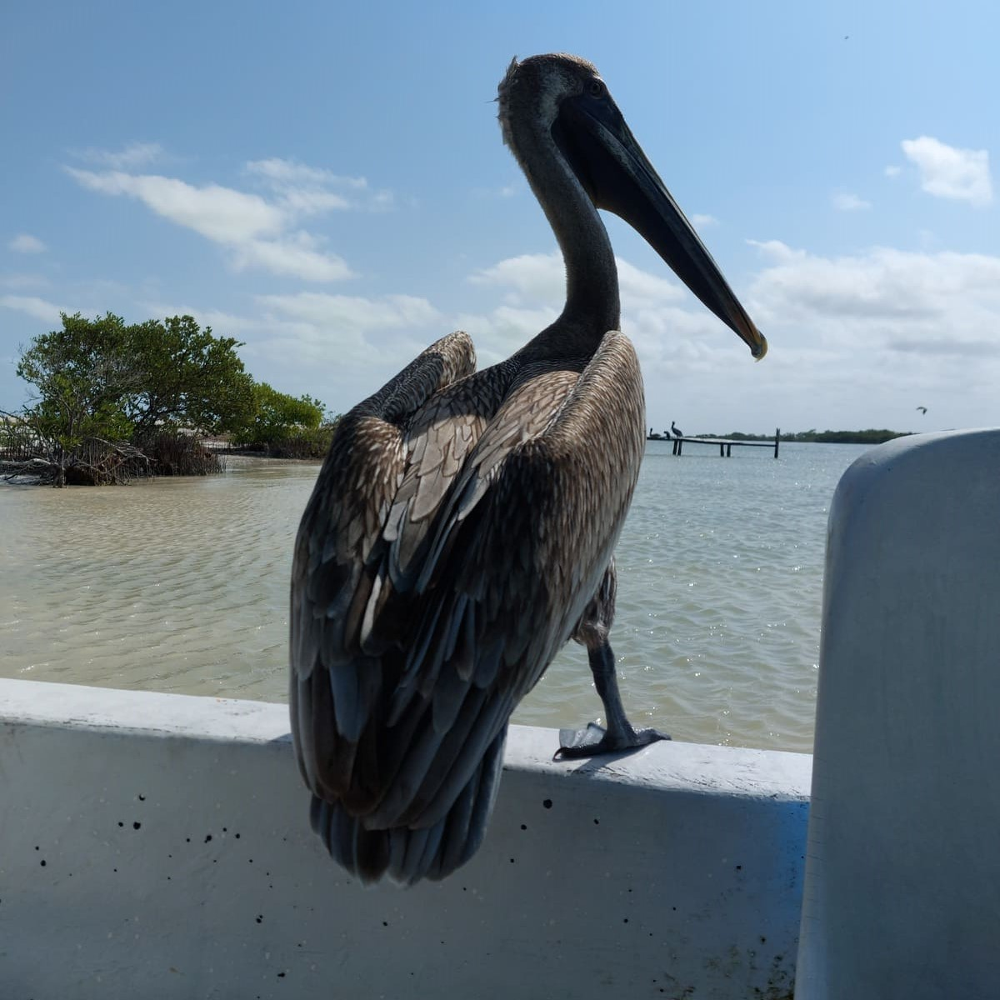

Walking Tours
🚶♂️ WALKING TOUR EN VALLADOLID (TOUR MATUTINO) ☀️
Descubre Valladolid de una manera única con nuestros recorridos diseñados para sumergirte en la vibrante cultura local 🎨. Desde el corazón histórico de la ciudad, donde la majestuosa Iglesia de San Servacio ⛪ y la encantadora plaza te transportarán al glorioso pasado de Valladolid, hasta el pintoresco barrio indígena de Santa Ana, donde el bullicioso mercado 🛍️ y los lugareños te recibirán con los brazos abiertos 🤗.
No puedes perderte la visita al impresionante cenote Zací, un tesoro oculto en el centro de la ciudad que revela secretos ancestrales. Déjate cautivar por la fascinante arquitectura colonial 🏘️ y las coloridas calles que hacen de Valladolid uno de los destinos más pintorescos de México 🇲🇽.
Únete a nuestro recorrido matutino y sumérgete en la vida cotidiana y las tradiciones que hacen de Valladolid un lugar único en el mundo 🌍. ¡Una experiencia que no querrás perderte! 😍
Horario del tour: 8:30 a.m / 9:30 a.m ⏰
Punto de encuentro: Plaza principal Francisco Cantón Rosado (cerca de la fuente de la mestiza). Busca a los chicos con sombrillas o playeras naranjas 🟧.

🌆 WALKING TOUR EN VALLADOLID (TOUR VESPERTINO) 🌇
Descubre Valladolid a través de un recorrido lleno de historia y misterio 🔮 que comienza en la encantadora Plaza Principal, corazón de este pueblo mágico ✨. Desde la majestuosa Iglesia de San Servacio ⛪ hasta las pintorescas calles empedradas, cada paso revela secretos antiguos y la vibrante vida de los mayas contemporáneos.
Déjate cautivar por las coloridas fachadas que te guiarán al imponente Ex Convento de San Bernardino 🏰, donde podrás explorar uno de los museos más populares y descubrir cómo se vivía en estas magníficas casonas. El punto culminante será frente al Exmonasterio de San Bernardino, testigo de siglos de historia y centro de la evangelización en Yucatán 📖.
Y para culminar, no te pierdas las emblemáticas letras de Valladolid, símbolo de la identidad de esta encantadora ciudad. ¡El recorrido vespertino termina justo antes del impresionante show de luces 🎆 en el exmonasterio, una experiencia que no querrás perderte! 😍
Horario del tour: 5:30 p.m / 7:30 p.m ⏰
Punto de encuentro: Plaza principal Francisco Cantón Rosado (cerca de la fuente de la mestiza). ¡Busca a los chicos con sombrillas o playeras naranjas 🟧!
Tours Completos
Descubre los misterios y rincones de Chichen Itzá con nuestros expertos guías nativos. Declarada por la UNESCO como patrimonio mundial de la humanidad en 1988 y como una de las nuevas maravillas del mundo moderno el 7 de julio del 2007. Esta antigua ciudad maya todavía guarda misterios que sólo pueden ser descubiertos de la mano de expertos locales, aprende sobre la cultura, arquitectura, historia y tradiciones mayas. Más que un guía, tendrás un acompañante que te hará disfrutar al máximo tu visita, brindándote recomendaciones para una estancia placentera y divertida.
Además, podrás evitar largas filas para comprar tus boletos, si así lo deseas, puedes solicitarlos al momento de hacer tu reserva.
🕒 Horario del tour 8:00 a.m (para evitar las multitudes y el calor)
📍 Punto de encuentro: acceso principal de la zona arqueológica de Chichen Itza
❌ No incluye tickets de acceso a la zona arqueológica.
Mas información¿Sabías que los mayas protegían una ciudad con una triple muralla? A solo 30 minutos de Valladolid, Yucatán, se encuentra Ek Balam, que en lengua maya significa “jaguar negro” o “estrella jaguar”.
Descubre los misterios de esta impresionante ciudad maya recorriendo sus habitaciones y admirando la auténtica escritura jeroglífica en sus paredes. A diferencia de otros sitios arqueológicos, aquí podrás disfrutar del paisaje desde la cima de sus magníficos palacios y templos, incluyendo la Gran Acrópolis, una de las estructuras más grandes de Yucatán.
Ek Balam te sorprenderá con una de las tumbas más importantes del mundo maya. Aprenderás sobre la historia, arquitectura y cultura de esta fascinante civilización. Si estás en la región, no puedes perderte esta experiencia
No dejes pasar la oportunidad de conocer Ek Balam; una zona arqueológica única en su tipo,aún tiene muchos elementos y rincones escondidos que solo un guía nativo te puede mostrar. Prepárate para escalar sus maravillosos templos y entender la historia que guardan sus paredes. Te aseguramos que te enamorarás aún más de la cultura maya.
🕒 Horario de tour: 8:00 a.m
📍 Punto de encuentro: acceso principal de la zona arqueológica de Ek Balam, justo donde estan las letras fotográficas.
❌ No incluye Tickets de acceso a la zona arqueológica.
Mas información¡Embárcate en una aventura desde Valladolid, para descubrir la magnífica ciudad prehispánica de Chichen itza, declarada patrimonio mundial de la humanidad en 1988.
Nuestro tour comienza con la recogida en tu hospedaje, al ser de los primeros en llegar disfrutarás el paseo en la zona arqueológica evitando el calor y las multitudes. Al llegar uno de nuestros guías certificados y expertos en Chichen Itza te explicará todo lo relacionado sobre la cultura maya. Después de explorar Chichen Itzá, la aventura continúa con la visita a dos fuentes de refrescantes aguas subterráneas mejor conocidas como Cenotes
Rodeada por la impresionante selva tropical que caracteriza nuestro estado de Yucatan se encuentran los cenotes Ikkil, Xkeken y Samula.
Al ser un tour exclusivo (grupo muy reducido) disfrutarás de este tour sin prisas y a tu propio ritmo.
🕒Pick up: 7:00 a.m. Incluye:
- 🚌 Transportación.
- 👨✈️ Chofer.
- 🗺️ Servicio de guía en la zona arqueológica de Chichen Itza.
No incluye:
- ❌ Tickets de acceso a la zona arqueológica.
- ❌ Tickets de acceso a los cenotes.
 





🌟 ¡Únete a nosotros en una aventura inolvidable para explorar dos de los tesoros más emblemáticos de Yucatán!
Disfruta y aprovecha al máximo de tu estancia en Valladolid.
Si eres amante de la arqueología, historia y por supuesto de la aventura, esta experiencia es perfecta para ti.
Disfrutarás de una mañana en la zona arqueológica de Chichen Itza antes de las multitudes y el intenso calor que caracteriza a nuestro Estado.
Después de esta caminata a refrescarse en las cristalinas aguas de uno de los cenotes más hermosos de Yucatán, deleitarás comida regional (buffet).
Después de refrescarse, nada mejor que disfrutar del atardecer con las vistas más hermosas sobre los templos y palacios de la zona arqueológica de Ek Balam.
Por supuesto que nuestros guías certificados te harán sumergirte en la historia y conocimiento que encierra nuestra maravillosa cultura y sus ciudades prehispánicas.
🕒 Todo esto sin prisas y a tu propio ritmo en un tour exclusivo (grupo muy reducido).
😊 Para nosotros no hay nada más importante que la satisfacción y disfrute de nuestros viajeros.
🕖 Pick up: 7:00 a.m.
✅ Incluye:
- 🚌 Transportación
- 👨✈️ Chofer
- ⛽ Combustible
- 🅿️ Parking
- 🗺️ Servicio de guía en la zona arqueológica de Chichen Itza
- 🗺️ Servicio de guía en la zona arqueológica de Ek Balam
- 🎟️ Incluye tickets de acceso al cenote
- 🍽️ Incluye comida tipo buffet
❌ No incluye:
- 🎟️ Tickets de acceso a la zona arqueológica de Ek Balam y Chichen Itza
- 🍹 Bebidas en el restaurante
⚠️ Restricciones para el cenote:
- 🚷 No apto para personas con dificultades de movilidad, problemas cardiacos y claustrofóbicos
- ♿ Silla de ruedas
- 🐾 Mascotas
¿Sabías que hay una ciudad que los mayas protegían celosamente con una triple muralla? Localizado a 30 minutos de Valladolid, Yucatán. "Ek Balam" vocablos en lengua maya traducidos como: jaguar negro, jaguar obscuro o estrella jaguar.
Descubre la magia ancestral de esta ciudad prehispánica en un tour inolvidable desde Valladolid. Conoce los misterios que encierra esta impresionante ciudad maya, recorriendo sus habitaciones.
Asómbrate con la autentica escritura geroglífica que todavía sobrevive en sus paredes. Además, a diferencia de otro sitio arqueológico, aquí tendrás la oportunidad admirar el impresionante paisaje en la cima de sus magnificos palacios, templos y sobre una de las estructuras más grandes de todo el estado de Yucatán : la gran Acrópolis.
Ek Balam no parará de sorprenderte, conocerás una de las tumbas mas importantes e impresionantes del mundo maya.
Hablaremos sobre historia, arquitectura, cultura y mucho más. Si estas en esta región, no te puedes perder esta experiencia.
Y para completar tu aventura, después de conocer esta impresionante zona arqueológica, refrescate y sumérgete en las aguas cristalinas de los cenotes Xcanché y Hubiku. El primero se encuentra localizado a un costado del sitio arqueológico.
🍽️ Completa tu día con un delicioso buffet de comida regional.
🕖 Pick up: 7:00 a.m.
✅ Incluye:
- 🚌 Transportación.
- 👨✈️ Chofer.
- 🅿️ Estacionamiento.
- 🗺️ Servicio de guía en la zona arqueológica de Ek Balam.
- 🎟️ Incluye tickets de acceso al cenote Xcanche y al cenote Hubiku.
- 🍽️ Incluye comida tipo buffet.
❌ No incluye:
- 🎟️ Tickets de acceso a la zona arqueológica de Ek Balam.
- 🍹 Bebidas en el restaurante.
 



Tu aventura comienza a las 6:00 de la mañana, pasando a recogerte en tu hotel en Valladolid. Nos tomará alrededor de 2 horas llegar al puerto de Río Lagartos.
🚤 Una vez en Río Lagartos, embarcaremos en una emocionante aventura en lancha. Nuestro guía local experto nos llevará a través de los manglares y estuarios, donde tendrás la oportunidad única de observar una amplia variedad de aves migratorias y la fauna local, incluyendo los emblemáticos cocodrilos 🐊.
🏖️ Después de la navegación, nos detendremos en una playa cercana para que puedas relajarte y disfrutar del paisaje costero. Tendrás tiempo libre para nadar en las aguas cristalinas o simplemente tomar el sol en la arena blanca.
🌸 Opción de Visita a Las Coloradas: Para aquellos interesados en las famosas lagunas rosadas de Las Coloradas, podrás optar por hacer una parada (entrada no incluida). Este lugar es conocido por su espectacular coloración rosada debido a la alta concentración de sal y microorganismos.
⛲ Después de esta aventura, regresaremos para disfrutar un impresionante cenote, donde podrás refrescarte y admirar la belleza natural de las formaciones rocosas y aguas subterráneas. En este mismo lugar, disfrutarás de un delicioso almuerzo tipo buffet 🍽️. Saborea los sabores auténticos de la cocina yucateca.
Finalmente, te llevaremos de regreso a tu hotel en Valladolid 🏨.
Incluye:
- 🚐 Pick up y drop off en su hotel en Valladolid
- 👨✈️ Chofer
- ⛽ Combustible
- 🚤 Paseo en lancha en Río Lagartos para la observación de fauna y flora
- 🏊♂️ Tiempo para nadar en la playa
- 🌸 Visita a Las Coloradas (opcional, acceso no incluido)
- 🎟️ Tickets de acceso al cenote
- 🍽️ Comida tipo buffet
No incluye:
- 🍹 Bebidas en el restaurante
- 🎟️ Tickets de acceso a Las Coloradas
Restricciones para el cenote:
- 🚫 No apto para personas con dificultades de movilidad, problemas cardíacos y claustrofobia
- 🚫 No apto para silla de ruedas
- 🚫 No se permiten mascotas
Para nuestros antepasados mayas, nuestro universo estaba conformado en 3 niveles y 7 rumbos cósmicos. Estos eran los puntos cardinales, el supramundo, mundo e inframundo.
Al que todos le temían era al Xibalba, lugar donde moraban los 9 señores más temidos y solamente aquellos que tenían el privilegio y la valentía suficiente podían descender y estar en contacto con ellos.
En esta aventura podrás conocer las puertas al inframundo, ts'ono'oto'ob como nuestros ancestros les llamaban, lugares llenos de misterios, que probablemente fueron utilizados para ciertos tipos de ofrendas dedicados a Bolonti' Ku', los 9 señores del inframundo.
Nuestra experiencia Xibalba es un tour exclusivo diseñado para pequeños grupos de exploradores, de máximo 6 personas, donde conoceremos los cenotes más bonitos de la región, sin prisas y a tu propio ritmo.
Descubre la Magia de los Cenotes y la Cultura Maya en un Tour Inolvidable.
Sumérgete en la belleza oculta del oriente de Yucatán con nuestra experiencia única de Cenotes y Comida en Comunidad Maya.
¡Cuatro cenotes espectaculares te esperan! Desde las aguas cristalinas del cenote Palomitas hasta la majestuosa e impresionante caverna de Xux-ha, cada cenote revela una historia milenaria.
Pero la aventura no termina ahí, te invitamos a disfrutar del sabor auténtico de nuestra cocina yucateca con el platillo típico de la región "El pooc chuc" (en caso de ser vegetariano o vegano, favor de notificar).
✅ Incluye:
- 🚌 Transporte desde su hotel en Valladolid
- 👨✈️ Chofer
- ⛽ Combustible
- 🎟️ Tickets de acceso a cuatro cenotes (Palomitas, Xcanahaltun, Secreto Maya, Xux-ha)
- 🍽️ Comida regional
- 💧 Aguas durante traslado y cenotes
❌ No incluye:
- 🍹 Bebidas en el restaurante
- 🦺 Chalecos salvavidas
- 🔒 Lockers
⚠️ Restricciones:
- 🚷 No apto para personas con dificultades de movilidad, problemas cardiacos y claustrofóbicos
- ♿ Silla de ruedas
- 🐾 Mascotas